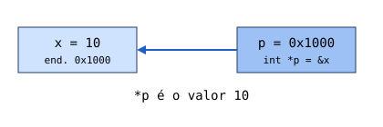

24. Ponteiros: conceito e utilização básica
Conteúdos para estudo
Um ponteiro guarda o endereço de memória de outra variável. &x dá o endereço de x; *p acede ao valor apontado.
int x = 10; int *p = &x; cout << p; // endereço de x cout << *p; // 10 *p = 20; // x passa a valer 20

Atividade 24 – “Endereços e valores”
Identifique endereços e valores e utilize os operadores & e * em exemplos simples.
Os dados são guardados automaticamente neste navegador.